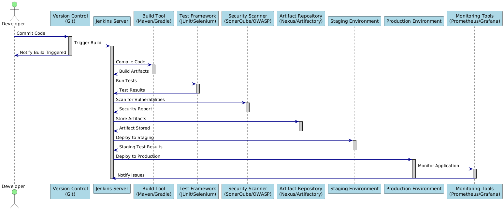

Jenkins is an open-source automation server that plays a pivotal role in implementing Continuous Integration and Continuous Delivery (CI/CD) pipelines. It automates the building, testing, and deployment of software, enabling development teams to deliver quality applications more rapidly and reliably.
Jenkins automates repetitive tasks such as code compilation, testing, and deployment. It reduces manual errors and accelerates feedback loops during software development.
With hundreds of plugins available, Jenkins can integrate with a variety of tools—ranging from source control systems (like Git or SVN) to build tools (such as Maven, Gradle) and deployment platforms (cloud services, Docker, Kubernetes).
Jenkins uses a distributed architecture where a central server (the Master) coordinates tasks and multiple agents (or slaves) execute the jobs. This design allows for parallel processing and scalability across different environments.
Through Jenkins Pipelines (defined in a Jenkinsfile), developers can script the CI/CD workflow. This approach promotes versioning, reusability, and better collaboration on the build process.
CI is the practice of frequently merging code changes into a shared repository. Each integration is automatically built and tested to detect errors early, ensuring that code remains in a releasable state. This practice minimizes integration issues and encourages better code quality.
Continuous Delivery builds on CI by ensuring that the software can be released at any time. After the build and testing stages, the software is automatically packaged and prepared for deployment. While the deployment may still be a manual decision, the process is streamlined and repeatable.
An extension of Continuous Delivery, Continuous Deployment automates the deployment process as well. Every change that passes the automated tests is deployed directly to production, reducing the time-to-market and ensuring rapid delivery of new features.
Together, Jenkins and CI/CD concepts empower development teams to achieve faster, more reliable releases, ensuring that software delivery keeps pace with business needs.
Jenkins automates the software development lifecycle (SDLC) from development to deployment, including necessary checks like vulnerability and security scanning.
